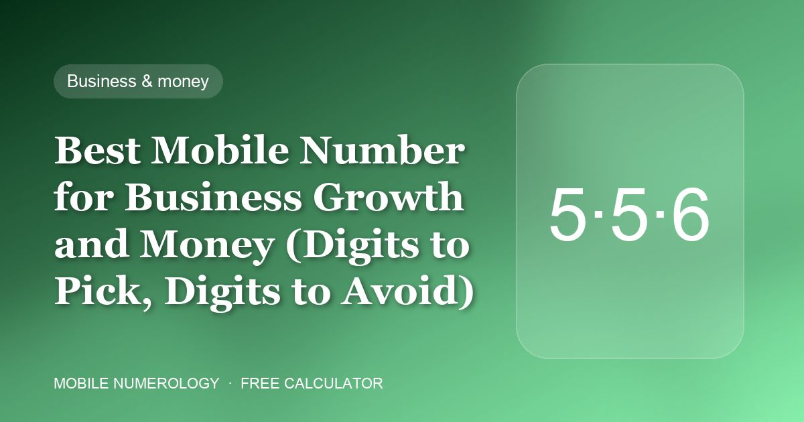
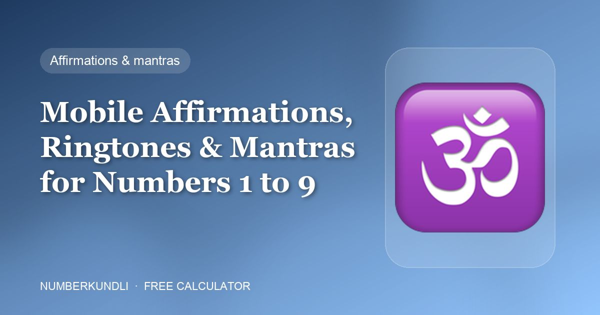
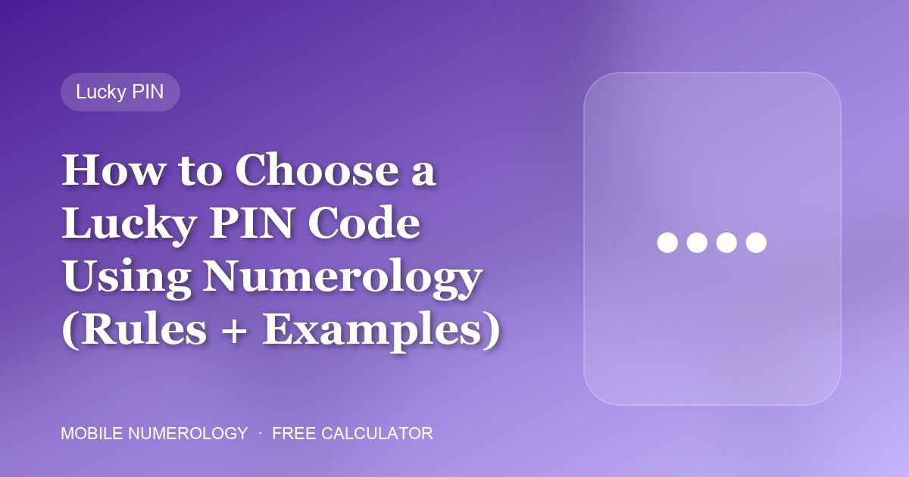
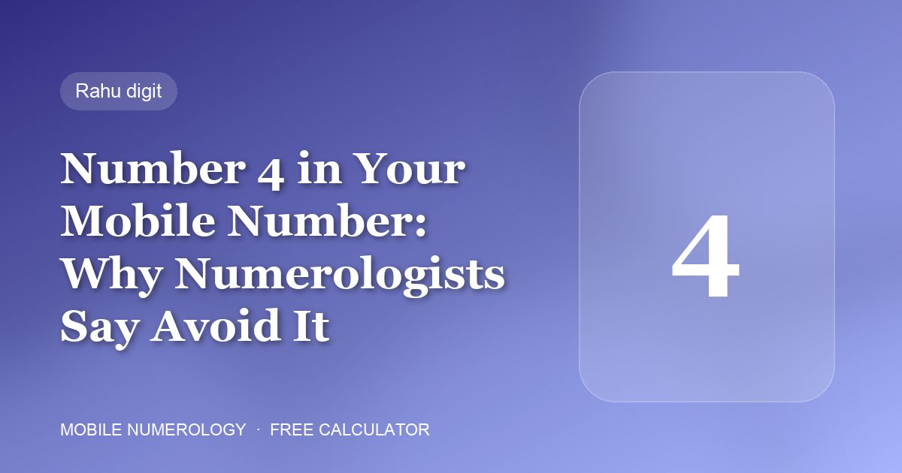
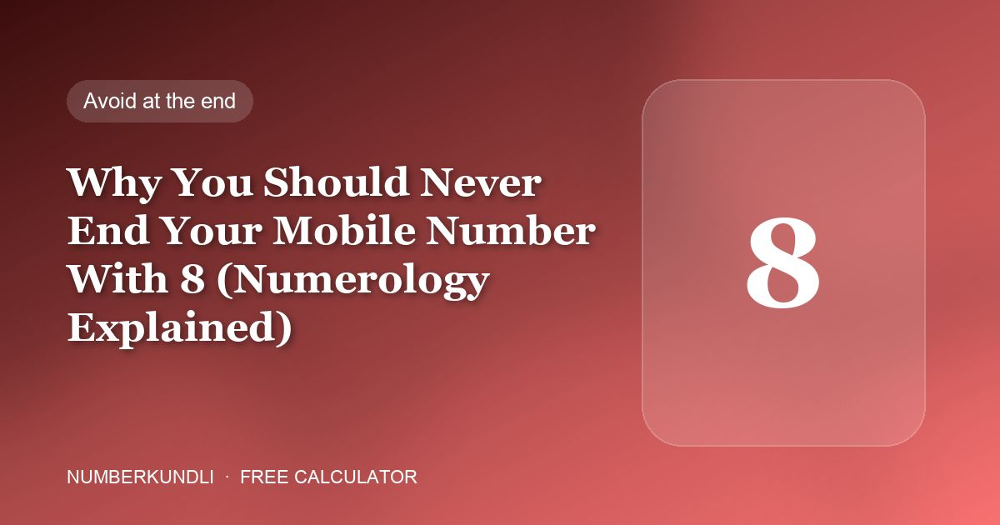
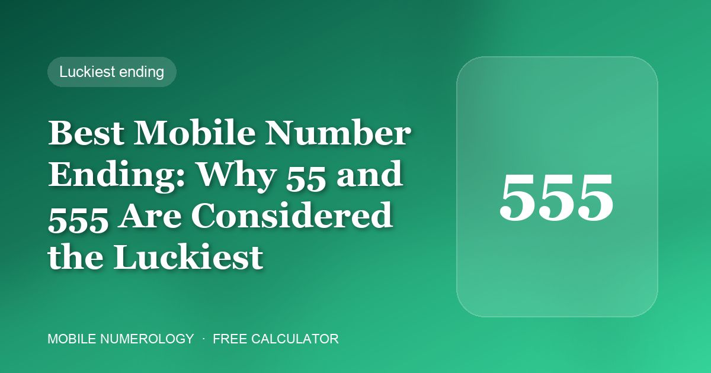

Mobile Number For a business line the last three digits do most of the work. Here is exactly what to put there — and what to keep out.
NumberKundli 14 September 2026
Core Numbers Every recommendation in mobile numerology comes back to one question: is this number a friend, an enemy or neutral to you?
NumberKundli 13 September 2026

Lifestyle Every call is a small event. The system pairs each number with two affirmations, a ringtone style and a planetary mantra to set the tone.
NumberKundli 12 September 2026
Lifestyle Black for discipline, gold for authority, green for business, purple for intuition — the colour of your phone is a daily dose of one planet.
NumberKundli 11 September 2026
Lifestyle The case you choose to protect your phone quietly describes how you protect yourself. Numerology matches nine cover types to Birth numbers.
NumberKundli 10 September 2026
Lifestyle Rising sun for 1, full moon for 2, Lakshmi for 6, Hanuman for 9 — each number has imagery that resonates with its planet.
NumberKundli 09 September 2026
PIN & Password GANESHJI totals 6. LAXMI totals 5. In Chaldean numerology a password is a word with a number inside it — and that number can be chosen on purpose.
NumberKundli 08 September 2026

PIN & Password You type your phone PIN dozens of times a day. Numerology treats it as a small daily ritual — so choose the digits deliberately.
NumberKundli 07 September 2026
Core Numbers Nine boxes, one date of birth. The Lo Shu grid shows at a glance which energies you were born with — and which ones you need to add.
NumberKundli 06 September 2026
Core Numbers Two numbers drive every recommendation in mobile numerology. Both come from your date of birth and take less than a minute to work out.
NumberKundli 05 September 2026

Mobile Number The traditional rules are unusually blunt about one digit: "Avoid 4 number in mobile phone." Here is why.
NumberKundli 04 September 2026

Mobile Number 8 is the number of Saturn: karma, hard work and delay. In the wrong position of a phone number it becomes a drain on money and relationships.
NumberKundli 03 September 2026

Mobile Number If you could pick the last digits of your phone number, numerology has a clear favourite: 55 or 555.
NumberKundli 02 September 2026
Mobile Number Your mobile number is not just a string of digits. In mobile numerology each position — from the first digit to the last — rules a specific area of life.
NumberKundli 01 September 2026